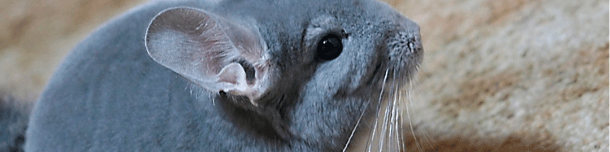

Adopt Today
Local Chinchilla Breeders
Quite often I do not have rescues up for adoption. A very knowledgable and local breeder is Lyn Shuster of Lyn's Chins. She has kits and youngster chinchillas that are also looking for their forever home! It is always better to purchase from a local breeder than a petstore. With a petstore chin you get no background information or even a choice in color! Check out her website.